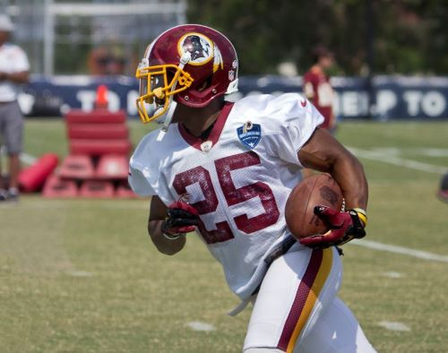

Overvalued and Overpaid: The Modern Day Running Back
This blog post is a tasteful analysis of how the modern day running back has become less important to overall success.
The Impact of Slang on Newer Generations
This is a podcast by the Raccoons discussing the impact of slang on newer generations.
What is xwOBA???
This video is a breakdown of some advanced baseball analytics, including xwOBA.
Raccoon Wildlife Rescue
This raccoon wildlife rescue site provides information on raccoons and how to donate to their preservation.